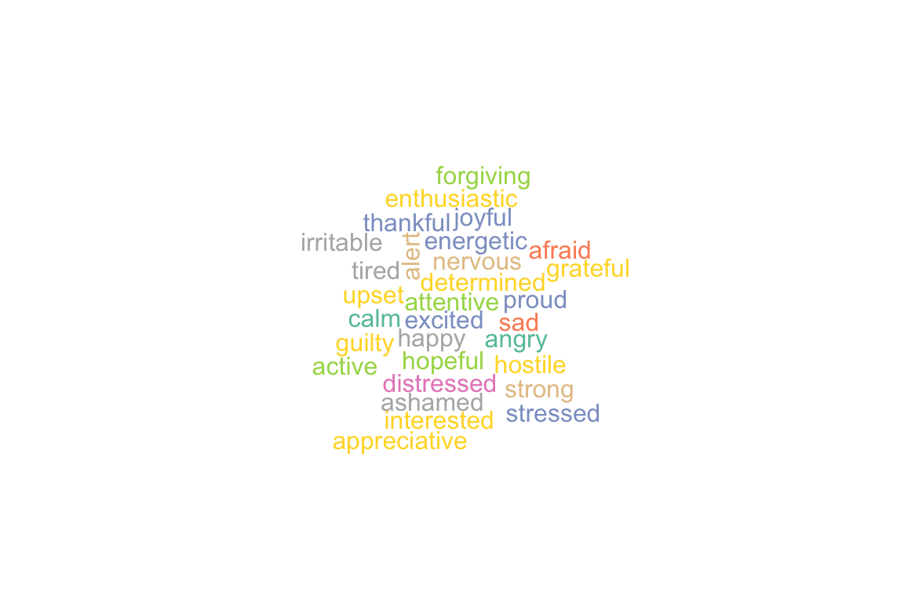
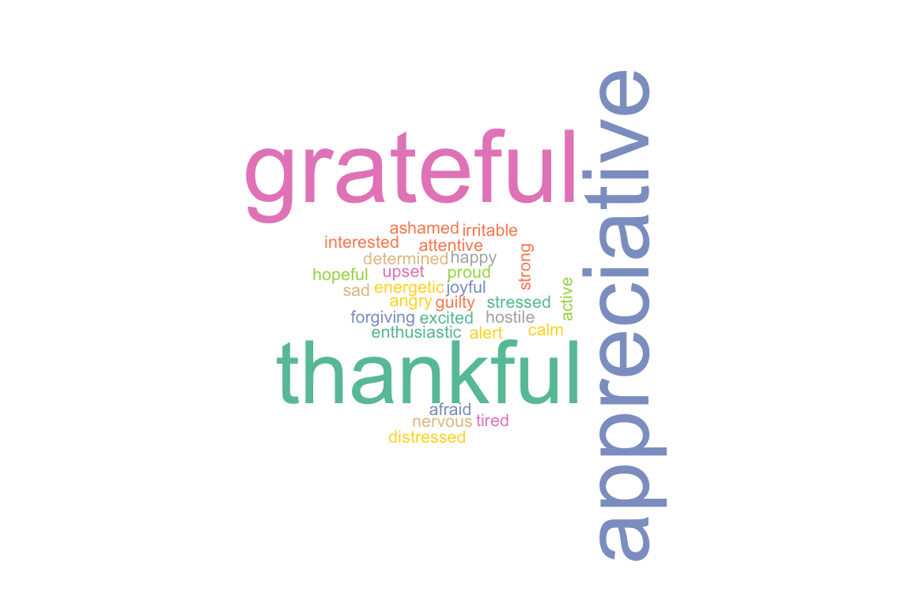
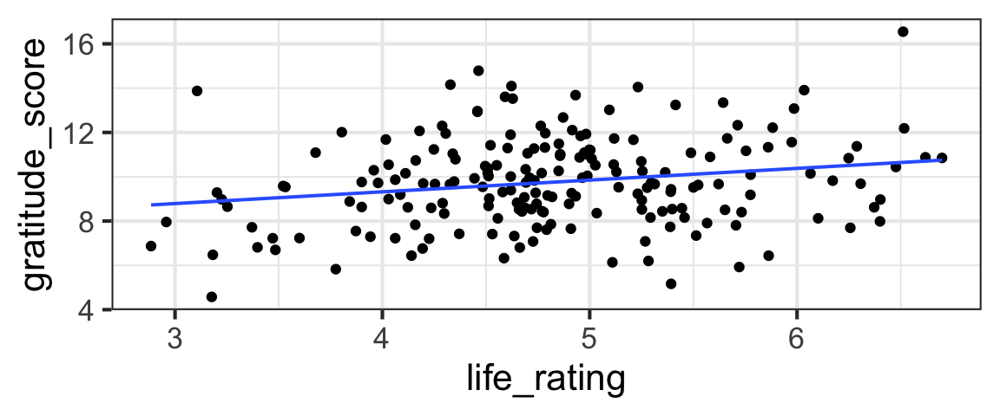
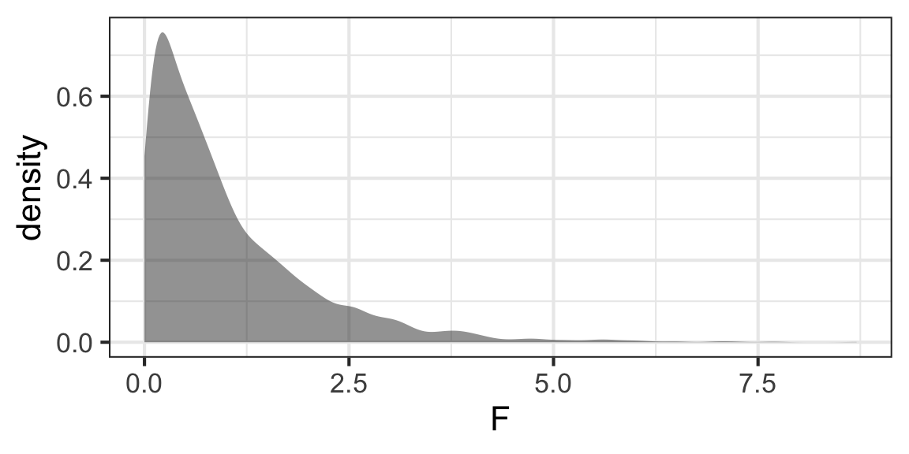
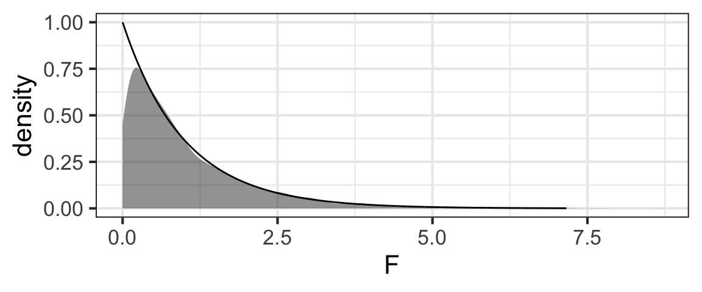

Learning Outcomes
This module introduces several additional tests that will allow us to make more nuanced inferences, for a wider range of (linear) regression models. After our brief foray into binary data regression last week, this week will return to (multiple) linear regression, including both quantitative and categorical variables. Methods explored will include t-tests (with non-equal variance) and Analysis of Variance (ANOVA), which allows us to assess the utility of categorical predictors with 3+ categories, as well as comparing pairs of models to each other.
By the end of the module you will:
- Use a two-sample t-test as an alternative to simple linear regression with one two-level categorical predictor, to test whether the two categories have different average response variable values without assuming that variance is equal between the two groups.
- Derive the F-ratio and ANOVA test in terms of SSG, MSG, SSE, and MSE, and the F-ratio
- Generalize your understanding of ANOVA to the case of model comparisons for deciding between a (multiple) linear regression model and a selected sub-model
- Synthesizing 2)-3), Be able to explain (graphically, verbally, or analytically) how ANOVA allows us to assess the utility of a quantitative predictor or a categorical predictor, or to compare models
- Use
anova()orcar::Anova()to carry out ANOVA in R - Use
TukeyHSD()in R to determine which group means are different, if a one-way ANOVA has allowed you to reject the null hypothesis that they are all the same
These materials come from your text book, FAStR2 Chapters 6.4, 6.7, 7.1 - 7.3 (selection from them!).
Case Study: Gratitude
A growing body of research has documented the effects that practicing gratitude can have on people – providing not just spiritual and mental-health benefits, but even improving physical health.
Dataset
We will dive further into this topic – learning about ANOVA and some other tests along the way – via a case study where researchers tried to collect data to answer:
“How does gratitude affect peoples’ mental and physical well-being?”
The data are simulated based on the results of a paper published in 2003:
Click on the image above to get the full PDF. Reading it is not required, but it is interesting and accesible - check it out if you have time!
Can We Induce Gratitude?
To understand whether gratitude can cause improvements in mental and physical health and practices, the researchers needed to do a randomized study, in which they somehow controlled peoples’ gratitude levels. How did they do that?
First, they recruited nearly 200 college students to participate in their study.
They asked participants to complete a weekly journal, writing lists of things that they were grateful for. 1/3 of study participants were randomly assigned to this group - the gratitude group.
Other participants were asked to write about things that annoyed them instead – this was the hassles group.
Finally, a control group – the events group – just wrote about events in the past week that had affected them (could be either positive or negative).
Before delving into any other questions, the researchers had to verify that the gratitude group actually felt more grateful than the other groups…
More Design Details
In addition to the journals, all the students had to complete weekly surveys about their behavior and state of mind.
For example, they had to state how often (on a scale of 1 to 5) they experienced each of a set of feelings over the preceding week:

Pulling out Gratitude
The researchers combined scores from the words thankful, appreciative, and grateful to assess participants’ gratitude. In our dataset, this value is called gratitude_score.

The Data
How do the data actually look?
gf_boxplot(gratitude_score ~ group, data = grateful, color = ~group)It seems like perhaps the gratitude_score is higher for the gratitude group and lower for the others, but we really need hypothesis test results to have more confidence in our judgment of whether the difference is real or if the differences between groups could just be the result of random sampling variation.
Our Questions
As Emmons and McCullough did, our first job will be to test whether the mean gratitude_score is the same for the different groups in the study – the gratitude group, the hassles group, and the events group.
First, we will consider a simplified case with only two groups: the gratitude and hassles groups.
But, considering the full dataset, we have more than two groups to compare. We also have other potential quantitative predictors we could include in our models. This will allow us to look at a few other tests (to figure out whether it is worthwhile to include a multi-level categorical predictor, or even a quantitative one; or to compare pairs of models consisting of a larger model and a smaller one that is a submodel of the larger one).
Comparing 2 Means: lm() Way
We have previously seen that we can use slope estimates from lm() and their standard errors with t-distributions to compute CIs or carry out hypothesis tests about the slope (often, testing \(H_0: \beta_1 = 0\)).
Review: Quantitative Predictors
For example, we could consider a model to predict gratitude_score as a function of life_rating (a score measuring positivity about one’s life as a whole).
gf_point(gratitude_score ~ life_rating,
data = grateful) %>%
gf_lm()
life_model <- lm(gratitude_score ~ life_rating,
data = grateful)
msummary(life_model)## Estimate Std. Error t value Pr(>|t|)
## (Intercept) 7.2008 0.8828 8.157 4.22e-14 ***
## life_rating 0.5295 0.1806 2.932 0.00377 **
##
## Residual standard error: 1.98 on 194 degrees of freedom
## Multiple R-squared: 0.04243, Adjusted R-squared: 0.03749
## F-statistic: 8.596 on 1 and 194 DF, p-value: 0.003775Review: CI for Slope
Find a 95% confidence interval for the slope coefficient of the life_model.
life_model <- lm(gratitude_score ~ life_rating,
data = grateful)life_model <- lm(gratitude_score ~ life_rating,
data = grateful)
beta_1 + c(-1,1) * t_star * SElife_model <- lm(gratitude_score ~ life_rating,
data = grateful)
# note: could also fill in numeric values for beta_1 and SE
# from model summary.
coef(life_model)[2] + c(-1,1) *
qt(0.975, df = nrow(grateful) - 1) *
sqrt(diag(vcov(life_model)))[2]# or short cut:
life_model <- lm(gratitude_score ~ life_rating,
data = grateful)
confint(life_model)Review: Test for Slope
Categorical?
Text book reference: FAStR Chapter 6.7.1
If we consider a categorical variable with only two categories, everything is exactly the same (except the interpretation of the slope coefficient, which now gives the difference in means between the two categories).
For example, we can reduce the dataset to exclude the third events group, and then model gratitude_score as a function of group to see if the gratitude and hassles groups have different average gratitude scores.
grateful2 <- grateful %>%
filter(group != 'events') %>%
mutate(group = factor(group))
gf_boxplot(gratitude_score ~ group, data = grateful2)Practice
Fit the model and, just as in the previous example, find a 95% CI for \(\beta_1\) and test \(H_0: \beta_1 = 0\).
two_group_model <- lm(gratitude_score ~ group,
data = grateful2)two_group_model <- lm(gratitude_score ~ group,
data = grateful2)
confint(two_group_model)two_group_model <- lm(gratitude_score ~ group,
data = grateful2)
summary(two_group_model)
# to pull out just the p-value
coefficients(summary(two_group_model))['grouphassles', 'Pr(>|t|)']Easy peasy! As we mentioned before, the only real difference between this model and the one with a quantitative predictor is that we end up with an indicator variable instead of one with many different numeric values, so the interpretation of the slope coefficient \(\beta_1\) is different.
So what’s the problem?
Text book reference: FAStR Chapter 6.7.2
This works, generally. But it’s subject to all the conditions of any linear regression model; the key one we want to focus on at the moment is
E. Constant Variance of Residuals
In this case, the constant variance condition means that the variances of the two groups being compared are assumed to be the same.
(Note: in this particular case, the graph we looked at before showed very similar spread for both groups, so there is no problem with the constant-variance condition here…but it’s easy to imagine scenarios where we might want to compare group means without assuming equal variances.)
In some situations, though, this constant-variance assumption is not appropriate, or is unnecessarily restrictive.
And in this scenario, we’re in luck: it’s not too hard to derive an alternative procedure without the constant-variance condition (in this context, it’s often called the “equal-variance” condition).
Comparing 2 Means: 2-sample t-test
Text book reference: FAStR Chapter 6.7.2
If we draw samples of sizes \(n_1\) and \(n_2\), independently, from two normal populations with means \(\mu_1\) and \(\mu_2\) and variances \(\sigma^2_1\) and \(\sigma^2_2\), then the difference in means \(\bar{Y}_1 - \bar{Y}_2\) will be distributed:
\[ \bar{Y}_1 - \bar{Y}_2 \sim \text{Norm}\bigg{(} \mu_1 - \mu_2, \sqrt{\frac{\sigma^2_1}{n_1} + \frac{\sigma^2_2}{n_2}} \bigg{)}\]
(Since the variance of a sum (or difference) is the sum of the variances (favorite. variance. rule. ever…) and the standard deviation is the square root of the variance.)
Unfortunately, we do not generally know \(\sigma_1\) or \(\sigma_2\); we have to estimate them using the data. It turns out that the sampling distribution for this difference in means, with unknown \(\sigma\)s, does not correspond exactly to any of our standard PDF families. However, a t-distribution with \(\nu\) degrees of freedom is a good approximation. \(\nu\) is a bit of a pain to compute (so we generally leave it to software):
\[ \nu = \frac{(s_1^2 / n_1 + s_2^2 / n_2)^2}{\bigg{(} \frac{(s_1^2 / n_1)^2}{(n_1-1)} + \frac{(s_2^2 / n_2)^2}{(n_2-1)}\bigg{)}}\]
We could carry out this test “by hand”, using the expressions above to compute the standard error and the degrees of freedom (and then the \(t^*\) multiplier or the p-value from the t-distribution with those degrees of freedom \(\nu\)).
But conveniently, the R function t.test() does all the work for us.
t.test(gratitude_score ~ group, data = grateful2)##
## Welch Two Sample t-test
##
## data: gratitude_score by group
## t = 5.0682, df = 128.97, p-value = 1.361e-06
## alternative hypothesis: true difference in means between group gratitude and group hassles is not equal to 0
## 95 percent confidence interval:
## 0.9373433 2.1378348
## sample estimates:
## mean in group gratitude mean in group hassles
## 10.641295 9.103706Here, the group sizes are nearly equal and both groups have nearly the same variance, to the t.test() method and the lm() method give very similar solutions.
Of course, the t.test() is preferred when the two groups under comparison have very different variances!
So far, we considered a special case of a categorical predictor with just two categories. It’s often of interest to compare more than two categories. In fact, in our case study, we’d like to compare gratitude_scores between the gratitude, hassles, and events groups. How can we do this?
Hypotheses for ANOVA
Text book reference: FAStR2 Chapter 6.4.6, 7.1.2, 7.3
We want to test:
\[H_0: \mu_{gratitude} = \mu_{events} = \mu_{hassles}\]
In other words, our null hypothesis is that the means of all groups are the same. (The \(\mu\)s are the true population means for each of the groups.)
The alternate hypothesis is that at least one pair of groups has different means.
How do we translate this set-up into a linear regression model? We’re considering the model in which we predict gratitude_score with group:
grat_by_group <- lm(gratitude_score ~ group, data = grateful)
summary(grat_by_group)##
## Call:
## lm(formula = gratitude_score ~ group, data = grateful)
##
## Residuals:
## Min 1Q Median 3Q Max
## -4.527 -1.208 -0.128 1.160 7.016
##
## Coefficients:
## Estimate Std. Error t value Pr(>|t|)
## (Intercept) 9.5317 0.2383 40.006 < 2e-16 ***
## groupgratitude 1.1096 0.3369 3.293 0.00118 **
## grouphassles -0.4280 0.3357 -1.275 0.20382
## ---
## Signif. codes: 0 '***' 0.001 '**' 0.01 '*' 0.05 '.' 0.1 ' ' 1
##
## Residual standard error: 1.921 on 193 degrees of freedom
## Multiple R-squared: 0.1036, Adjusted R-squared: 0.0943
## F-statistic: 11.15 on 2 and 193 DF, p-value: 2.612e-05There are a few equivalent ways of setting this up (depending on which group is included in the intercept), but in R the code above will yield a model like:
\[ y_i = \beta_0 + \beta_1 x_1 + \beta_2 x_2 + \epsilon\]
where \(x_1\) and \(x_2\) are indicator variables for the gratitude and hassles groups:
\[ x_1 = \begin{cases} 1 \text{, if group is gratitude}\\ 0 \text{, otherwise} \end{cases}\]
\[ x_2 = \begin{cases} 1 \text{, if group is hassles}\\ 0 \text{, otherwise} \end{cases}\]
In this framework, \(\beta_0\) is the mean for the events group. \(\beta_1\) and \(\beta_2\) are the differences in means between groups (gratitude and events, and hassles and events). So our intention with this ANOVA is to test \(H_0: \beta_1 = \beta_2 = 0\). If this is true, then the intercept \(\beta_0\) will be the overall mean gratitude_score.
Test Stat for ANOVA: F-ratio
The big challenge here is to come up with a test statistic – one number that measures evidence against the null hypothesis that all the group means are the same.
How can we define a good test statistic to measure how different more than two numbers are?
The video below will walk through the derivation of the F-ratio statistic. You’re welcome to download or print a worksheet where you can take notes and summarize the material from this video (and other key parts of the tutorial). Writing and drawing it yourself may make it easier to understand and remember.
Part 1: What we need to measure
Note: in this video, \(x\) is used for the variable whose mean is being estimated; for us it would make more sense to use \(y\) but I’m trusting you to make the translation…
(You can also watch directly on YouTube if you prefer.)
Part 2: How we measure it
Note: again in this video, \(x\) is used for the variable whose mean is being estimated; for us it would make more sense to use \(y\) but I’m trusting you to make the translation…
(You can also watch directly on YouTube if you prefer.)
Sampling Distribution of F, Simulated
All right, we can compute the F-ratio now.
But what is its sampling distribution?
A Simulation
So, we know that a large value of F will let us reject the null. But how big is “large”?
We need to know the sampling distribution of F (when \(H_0\) is true) in order to judge.
Let’s first consider a simulation tailored to the case study we’re currently investigating.
Plan of Attack for Simulation
- We will simulate dataset with \(n =\) 196 and three groups
- In our simulations, \(H_0\) is true, so all the groups actually have the same mean (let’s make it 10).
- We’ll draw simulated data points from a \(N(10,2)\) distribution
- We will allocate them randomly to the three groups
- For each simulated sample, we will compute \(F\)
- When we have many values of \(F\) for many simulated datasets, we can plot the sampling distribution of \(F\) under the null hypothesis and see what it looks like.
Simulation Code/Results
If you are interested in details of how the simulation is coded, you’re welcome to check it out (but it’s hidden because you will not be asked to re-create something like this yourself).
Show code
n_sim <- 5000
n <- nrow(grateful)
F <- numeric(length = n_sim)
for(i in c(1:n_sim)){
sim_data <- data.frame(gratitude_score =
rnorm(n, mean = 10, sd = 2),
group = grateful$group)
group_means <- mean(~gratitude_score | group,
data = sim_data)
sim_data <- sim_data %>%
mutate(overall_mean = mean(~gratitude_score,
data = sim_data),
group_mean = group_means[group])
F[i] <- sum(~ ((group_mean - overall_mean)^2),
data = sim_data) / (3 - 1) /
( sum(~ (gratitude_score - group_mean)^2,
data = sim_data) / (nrow(sim_data) - 3) )
}
gf_density(~F)
Sampling Distribution of F, Derived
Text book reference: FAStR2 Chapter 6.4.6, 7.2, 7.3.2-7.3.3
- It looks how we expected – bounded by 0 on the left, and right skewed.
- But…what PDF looks like that???
- You may have some guesses based on the simulation, but let’s think it through.
- If you desire a more rigorous geometric treatment of these ideas, check out the text book references listed above.
Denominator of F (SSE / (n-K))
Let’s consider the denominator of F first: MSE = SSE / (n-K).
The residual standard error of our linear regression model is \(\sqrt{MSE}\)!
The residuals follow a normal distribution with mean 0 and variance \(\sigma^2\). We could standardize them by subtracting the mean (0) and dividing by \(\sigma\), and then they would have a standard normal distribution. The square of a standard normal random variable has a chi-square distribution, so
\[ \frac{SSE}{\sigma^2} \sim \text{Chisq}(n - K)\]
Similarly, for the numerator of F,
\[ \frac{SSG}{\sigma^2} \sim \text{Chisq}(K - 1)\]
The ratio of two chi-square distributions is an F distribution, so
\[ F = \frac{SSG / (K - 1)}{SSE / (n - K)} \sim F(\text{df}_1 = K - 1, \text{df}_2 = n - K)\]
Check it out:
gf_density(~F) %>%
gf_dist(dist = 'f',
params = c(df1 = 2, df2 = (nrow(grateful) - 3))) 
You may notice there’s a little mismatch between the simulated sampling distribution and the theoretical F distribution for very small F-values, but…where it counts, in the right tail, the match is very good. So our p-value estimates should be pretty good using this distribution (and for the record, you won’t see this issue so much with \(K > 3\)…)
P-value!
To get the p-value of our test, we just need to find the probability of getting an \(F\) stat at least as big as ours, in a \(F_{2, 193}\) distribution:
pf(11.15, df1 = 2, df2 = 193, lower.tail = FALSE)## [1] 2.61536e-05This is very small, so we reject \(H_0\): at least one of the pairs of groups in the study had different gratitude_scores.
Letting R do all the work
Text book reference: FAStR2 Chapter 7.3.2 - 7.3.3
Of course, we won’t do all the calculations by hand each time; there’s an R function to automate it all.
car::Anova(lm(gratitude_score ~ group, data = grateful))But notice – all the quantities that we used in our derivation of the F-statistic are right there in the ANOVA output table! (The numeric values also all match with the ones we’ve previously computed by hand.)
- The “group” row gives the SSG and its df (and the F stat and p-value)
- The “Residuals” row gives the SSE and its df. (Residuals is another statistical term for errors.)
- The “Sum Sq” column corresponds to “SS” terms (“MS” terms are not in the table, but can be computed from SSX and df from the table)
- The “F value” is the F-ratio (test statistic)
- The “Pr(>F)” is the p-value of the test
(A classic intro-stat textbook ANOVA problem is to give you a partially-filled-in ANOVA results table, and ask you to fill in the missing values.)
Pairwise Comparisons
Text book reference: FAStR2 Chapter 7.3.7
Whaddaya wanna know NOW?
- If we do reject \(H_0\), like we do here, the test just tells us that at least one pair of means is different.
- So here, is the
gratitudedifferent fromhassles? What about the control,events– is eithergratitudeorhasslesdifferent from that? - With the ANOVA test, we don’t know which pairs are different
- BUT if we fail to reject \(H_0\), then we know they are all the same - case closed.
- If we want to make pairwise comparisons, we need more tests.
Maybe a LOT more tests…
- Here, with three groups, we have just three pairs of means to compare
- With more groups, it would be a lot worse.
- We want to avoid problems with multiple comparisons! Consider jelly beans

In other words: we should be careful carrying out multiple comparisons, because the probability of making at least one Type I error increases with the number of hypotheses tested.
Pairwise tests corrected for multiple tests
Text book reference: FAStR Chapter 7.3.7
What if we could do a 2-sample t-test for each pair, but inflate the p-value of each test a little to make up for the number of tests being done?
(Well, that’d be great.)
Tukey’s pairwise Honest Significant Difference test (TukeyHSD()) in R does this for us.
(Note: we omit the details of the exact adjustment here, in the interest of making the size of this module a bit more reasonable. You can find them all in FAStR 7.3.7 if you wish to know.)
We only carry out the TukeyHSD() test after an ANOVA rejects \(H_0\) and indicates that at least one pair has different means. This restraint – not doing pairwise tests unless we already have evidence there will be at least one pair that are significantly different (plus the Tukey HSD adjustment-of-the-p-values) – helps us avoid Type I errors.
Coding the test in R is simple:
TukeyHSD(lm(gratitude_score ~ group, data = grateful),
conf.level = 0.95)## Tukey multiple comparisons of means
## 95% family-wise confidence level
##
## Fit: aov(formula = x)
##
## $group
## diff lwr upr p adj
## gratitude-events 1.1095887 0.3137355 1.9054420 0.0033649
## hassles-events -0.4280003 -1.2208332 0.3648326 0.4109801
## hassles-gratitude -1.5375891 -2.3304220 -0.7447562 0.0000247In the results table,
- The row labels tell us which means are being compared, and also gives the direction of subtraction
- The
diffcolumn gives the numeric difference in means for the two groups - The
lwrcolumn gives the lower bound of a confidence interval for the difference in means. (If you want a confidence level other than 95%, just change the inputconf.level = ...in your call toTukeyHSD(). If you omit it, 95% is the default.) - The
uprcolumn gives the upper bound of a CI for the difference in means. - The
p adjcolumn gives the p-value of a test with \(H_0: \mu_1 = \mu_2\) (agains a two-sided alternate).
Here, we see that the gratitude group has higher gratitude_scores than the hassles and events groups, but there is no evidence from the data that hassles and events are different from each other.
That’s good news for our researchers - they successfully “induced gratitude” in the gratitude group!
Practice
Since we’ve now demonstrated that the gratitude group is actually more grateful, we can now look at other hypotheses.
For example, are outlook on life and physical health different between the three groups?
The dataset contains four metrics that might differ between the groups:
life_ratingis a score measuring positivity about one’s life as a wholeweek_ratingis a score measuring expectations of how good one’s life will be in the coming weekillness_scoremeasures the degree to which one experienced physical illness in the past weekexercise_hoursmeasures the number of hours spent exercising in the preceding week
Choose one of the variables listed above.
Use the dataset grateful and carry out an ANOVA to test whether the mean of your variable is the same for all three groups. If appropriate, follow up with a Tukey HSD test to figure out which pairs of means differ. Be sure to think through what the conclusions of each test will be, in terms of gratitude.
car::Anova(lm(...))car::Anova(lm(..., data = grateful))car::Anova(lm(your_variable_name ~ group, data = grateful))car::Anova(lm(your_variable_name ~ group, data = grateful))
# only if ANOVA returns a small p-value:
TukeyHSD(lm(your_variable_name ~ group, data = grateful))Wow! I am always amazed that such simple practices can have such profound effects, in unexpected ways…
Devotion Break
Colossians 3:12-17 reminds us:
Therefore, as God’s chosen people, holy and dearly loved, clothe yourselves with compassion, kindness, humility, gentleness and patience. Bear with each other and forgive one another if any of you has a grievance against someone. Forgive as the Lord forgave you. And over all these virtues put on love, which binds them all together in perfect unity.
Let the peace of Christ rule in your hearts, since as members of one body you were called to peace. And be thankful. Let the message of Christ dwell among you richly as you teach and admonish one another with all wisdom through psalms, hymns, and songs from the Spirit, singing to God with gratitude in your hearts. And whatever you do, whether in word or deed, do it all in the name of the Lord Jesus, giving thanks to God the Father through him.
We do know that God expects our gratitude of us. The Heidelberg catechism is pretty clear on this requirement too (from Lord’s Day 45):
116. Why is prayer necessary for Christians?
Because it is the chief part of thankfulness which God requires of us (Psalm 50:14-15), and because God will give His grace and Holy Spirit only to those who earnestly and without ceasing ask them of Him, and render thanks unto Him for them (Matthew 7:7–8; Luke 11:9–10, 13; Matthew 13:12; Ephesians 6:18).
But this can all begin to feel burdensome, being told repeatedly that we should be thankful. It seems so unlikely to be fruitful. Being forced to be grateful – what possible good could that do?
Of course, we can consider that question theologically and get profound answers.
But data tells us too. What happened to the students in the study? Someone forced them to be grateful. And actually, it did them a kind of startling amount of good. How wonderful, that what is required of us is so good for us.
Generalization 1: A Quantitative Predictor
We can, if we wish, use ANOVA to measure the model utility of a simple linear regression with one quantitative predictor. Model utility means, basically, whether the model is any good – is it better to include the predictor than to stick with a simple intercept-only model? In the simple (one-predictor) linear regression case, the model utility test is basically the same as testing \(H_0: \beta_1 = 0\).
Before we examine the details, let’s just try it and see what happens. As our example, we’ll try to model gratitude_score as a function of life_rating, like we did at the beginning of the module.
Anova(lm(gratitude_score ~ life_rating, data = grateful))Comparing to our previous results with a t-test of \(H_0: \beta_1 = 0\):
summary(lm(gratitude_score ~ life_rating, data = grateful))##
## Call:
## lm(formula = gratitude_score ~ life_rating, data = grateful)
##
## Residuals:
## Min 1Q Median 3Q Max
## -4.891 -1.466 -0.098 1.219 5.899
##
## Coefficients:
## Estimate Std. Error t value Pr(>|t|)
## (Intercept) 7.2008 0.8828 8.157 4.22e-14 ***
## life_rating 0.5295 0.1806 2.932 0.00377 **
## ---
## Signif. codes: 0 '***' 0.001 '**' 0.01 '*' 0.05 '.' 0.1 ' ' 1
##
## Residual standard error: 1.98 on 194 degrees of freedom
## Multiple R-squared: 0.04243, Adjusted R-squared: 0.03749
## F-statistic: 8.596 on 1 and 194 DF, p-value: 0.003775We notice that the p-values for the ANOVA and the t-test are identical.
Clued in by the matching p-values, we can also note that the t-test statistic (2.9318) is related to the ANOVA F statistic (8.5956): \(F = t^2\).
(Remember in a previous assignment, when I thought that you all knew what F was but you didn’t actually, you proved that? I’m sorry / you’re now welcome…)
Cool. But, does it make sense?
So, the two tests are equivalent. But can we actually conceptualize the ANOVA with a quantitative predictor, analogous to the way we did for the case of the categorical predictor? Sure!
Here, we usually change notation a little - instead of talking about SSG and MSG we use SSM and MSM (Sum of Squares for the Model and Mean Squares for the Model, since there’s now a regression line instead of a set of group means).
Otherwise, the approach is exactly the same, but still worth walking through:
(You can also watch directly on YouTube if you prefer.)
Generalization 2: Model Comparisons
Text book reference: FAStR2 Chapter 7.1.5
We can also use ANOVA for multiple linear regression models (with several predictors, perhaps a mix of categorial and quantitative ones); now, there is a variety of hypotheses we might want to test.
Generally, we can call these model comparison tests. These compare two models, one of which must be a submodel of the other; in other words, the its model space must be a subspace of the model space of the larger model. We want to test whether the larger model \(\Omega\) is preferable to the smaller one \(\omega\).
Hypotheses to Test
To specify a test, we have to set up a null hypothesis that tells exactly how to restrict the larger model \(\Omega\) in order to make it equivalent to the smaller one \(\omega\).
A few examples (each section gives one representative example - of course, there are many other specimens of each type of test):
Model Utility Test
\[ \Omega: E(Y) = \beta_0 + \beta_1x_1 + \beta_2x_2\]
\[ \omega: E(Y) = \beta_0 \]
\[H_0: \beta_1 = \beta_2 = 0\]
Practical Example: We want to test whether a model with life_rating and week_rating is useful
Omega <- lm(gratitude_score ~ life_rating + week_rating, data = grateful)
omega <- lm(gratitude_score ~ 1, data = grateful)
anova(omega, Omega)So we reject the null hypothesis and conclude that the model with predictors is better than the intercept-only one.
Removing a parameter
\[ \Omega: E(Y) = \beta_0 + \beta_1x_1 + \beta_2x_2\]
\[ \omega: E(Y) = \beta_0 + \beta_1x_1 \]
\[H_0: \beta_2 = 0\]
Example with the gratitude data:
Omega <- lm(gratitude_score ~ life_rating + week_rating, data = grateful)
omega <- lm(gratitude_score ~ life_rating, data = grateful)
anova(omega, Omega)So we fail to reject the null that \(\beta_2\) is 0: we conclude that the model with only life_rating is just fine.
Constraints on Parameter Values
\[ \Omega: E(Y) = \beta_0 + \beta_1x_1 + \beta_2x_2\]
\[ \omega: E(Y) = \beta_0 + \beta_1x_1 + \beta_1x_2 = \beta_0 + \beta_1(x_1 + x_2)\]
\[ H_0: \beta_1 = \beta_2\]
Omega <- lm(gratitude_score ~ life_rating + week_rating, data = grateful)
omega <- lm(gratitude_score ~ I(life_rating + week_rating), data = grateful)
anova(omega, Omega)So here, we reject the null hypothesis that \(\beta_1 = \beta_2\) and conclude the model with the two individual predictors is preferable.
Complex Hypotheses (Combinations of Above)
\[ \Omega: E(Y) = \beta_0 + \beta_1x_1 + \beta_2x_2 + \beta_3x_3\]
\[ \omega: E(Y) = \beta_0 + \beta_1x_1 + \beta_1x_2 = \beta_0 + \beta_1(x_1 + x_2)\]
\[ H_0: \beta_1 = \beta_2 \text{ and } \beta_3 = 0\]
Model Dimension
To carry out ANOVA in these cases, we will need to be able to assess the dimension of each model (\(\text{dim}\Omega\) and \(\text{dim}\omega\)). The dimension of a model is the number of free parameters (parameters needing to be estimated) in the model; in other words, the dimension of the model space as a vector space (if you like the geometric interpretation of regression). The model with larger dimension will always match the data better (or at least as well) as the smaller one: \(SSE_{\omega} < SSE_{\Omega}\).
Generalized F Statistic
Now, informally stated, we want to compute a test statistic to measure:
\[ F = \frac{\text{diff in errors, } \omega - \Omega}{\text{errors}(\Omega)} = \frac{MSE_{\omega - \Omega}}{MSE_{\Omega}} = \frac{(SSE_{\omega} - SSE_{\Omega}) / (\text{dim}\Omega - \text{dim}\omega)}{SSE_{\Omega} / (n - \text{dim}\Omega)}\]
In other words, our statistic measures: how much better does \(\Omega\) match the data than \(\omega\), normalized by the MSE for \(\Omega\)?
By an argument analogous to the one used previously, this statistic has an \(F(\text{df}_1 = \text{dim}\Omega - \text{dim}\omega, \text{df}_2 = n - \text{dim}\Omega)\) distribution.
Practical Examples of Model Comparisons
There are three common ways of carrying out these kinds of tests in R.
Model Utility Tests: summary()
For model utility tests, the test statistic \(F\) and p-value are reported in the very last line of the summary().
For example, consider a model to predict gratitude_score using the life_rating and the group.
summary(lm(gratitude_score ~ life_rating + group, data = grateful))##
## Call:
## lm(formula = gratitude_score ~ life_rating + group, data = grateful)
##
## Residuals:
## Min 1Q Median 3Q Max
## -4.7003 -1.3238 -0.1666 1.0438 6.1955
##
## Coefficients:
## Estimate Std. Error t value Pr(>|t|)
## (Intercept) 7.5188 0.8501 8.845 5.93e-16 ***
## life_rating 0.4352 0.1766 2.464 0.01461 *
## groupgratitude 0.9397 0.3397 2.767 0.00622 **
## grouphassles -0.5188 0.3334 -1.556 0.12131
## ---
## Signif. codes: 0 '***' 0.001 '**' 0.01 '*' 0.05 '.' 0.1 ' ' 1
##
## Residual standard error: 1.896 on 192 degrees of freedom
## Multiple R-squared: 0.1311, Adjusted R-squared: 0.1175
## F-statistic: 9.654 on 3 and 192 DF, p-value: 5.764e-06Removing Parameter(s)
To carry out ANOVA to determine whether to remove/retain parameters in a multi-predictor regression, we can use car::Anova().
This function carries out so-called “Type II” ANOVA tests. A p-value will be reported for each parameter in the model, testing the null hypothesis that that parameter is 0. In other words, it compares the full model \(\Omega\) with an \(\omega\) that excludes only the parameter in question.
Anova(lm(gratitude_score ~ life_rating + group, data = grateful))So we conclude that adding life_rating to a model with intercept and group is worthwhile (p-value 0.015); and adding group to a model with intercept and life_rating is also worthwhile (p-value 0.000089). If we were trying to “pare down” our model to keep only the best predictors, we would likely keep both in this case.
R Note: Anova(), not anova()!
Be careful not to use anova() to carry out tests related to removing parameters from a regression model.
anova() does “sequential” tests; for example, if you fit a model y ~ pred1 + pred2 + pred3, for pred1 anova() will compare \(\omega: E(Y) = \beta_0\) vs. \(\Omega: E(Y) = \beta_0 + \beta_1\text{pred1}\), but for pred2 it will compare \(\omega: E(Y) = \beta_0 + \beta_1\text{pred1}\) vs. \(\Omega: E(Y) = \beta_0 + \beta_1\text{pred1} + \beta_2\text{pred2}\).
In other words, with anova(), the order in which predictors are listed greatly affects the hypotheses tested, and the test results. THIS IS NONSENSE.
Model Comparisons
In other cases, if we want to compare two models \(\Omega\) and \(\omega\), we can just fit them both and then compare them with the syntax below.
anova(Omega, omega)(Yes, little-a anova() is what you want this time.)
This also works for any of the above cases (removing parameters or model utility check), if you manually fit the two models Omega (\(\Omega\)) and omega (\(\omega\)).
For example, what if we use this method to check whether a model with life_rating and group is preferable to one with just group? Give it a try…
Omega <- lm(gratitude_score ~ life_rating + group, data = grateful)Omega <- lm(gratitude_score ~ life_rating + group, data = grateful)
omega <- lm(gratitude_score ~ group, data = grateful)Omega <- lm(gratitude_score ~ life_rating + group, data = grateful)
omega <- lm(gratitude_score ~ group, data = grateful)
anova(Omega, omega)Note that we end up with the same result that we got before using Anova().
Parting Gift
Interested in thinking more about this topic?
Check out this (totally optional) TED talk by Brother David Steindl-Rast, a monk and interfaith scholar, on the topic of gratitude and happiness.